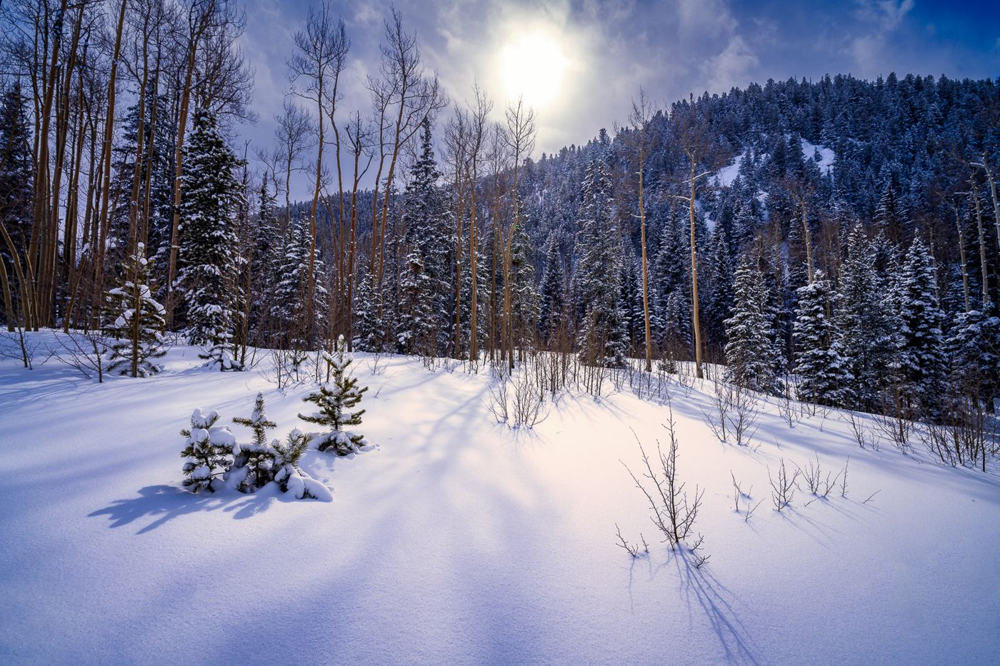
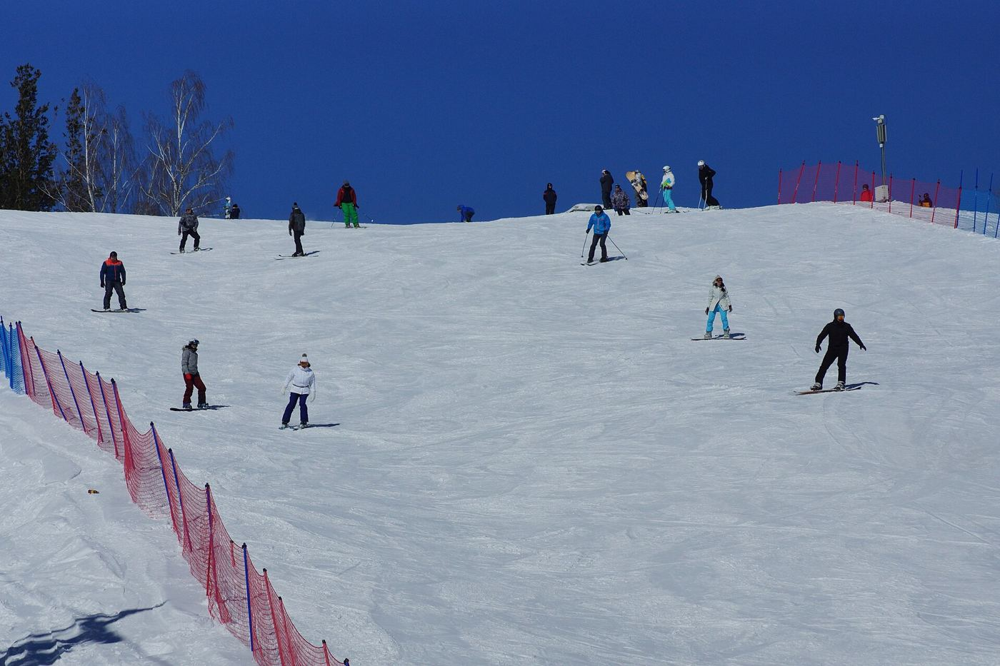
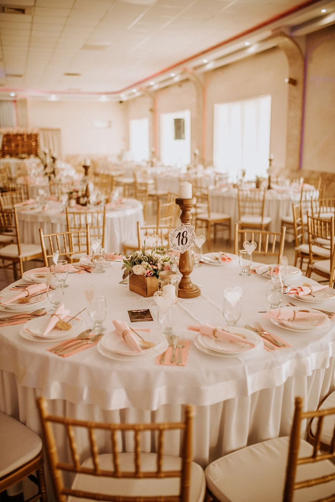

img/stock/hero-winter.jpg
img/stock/nature-path.jpg
img/stock/nature-forest.jpg
img/stock/ski-slope.jpg
img/stock/chairlift.jpg
img/stock/evening-tree.jpg
img/stock/banquet-hall.jpg
img/stock/banquet-table.jpg
img/stock/candles.jpg
img/stock/ded-moroz.jpg
img/stock/dj.jpg
img/stock/vocal.jpgimg/stock/disco.jpgimg/stock/concert.jpg
img/stock/fest-folk.jpg
img/stock/uha-fire.jpg
img/stock/uha-cauldrons.jpg
img/stock/banya.jpg
img/stock/massage.jpg
img/stock/rental.jpg
img/stock/kids-ski.jpg
img/stock/fireworks.jpg
img/stock/evening-lights.jpg
img/stock/forest-aerial.jpg